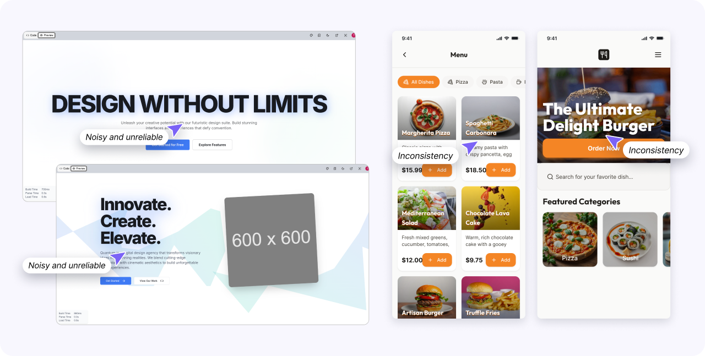
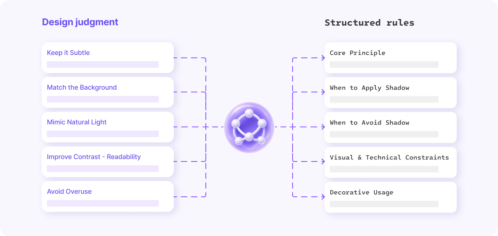
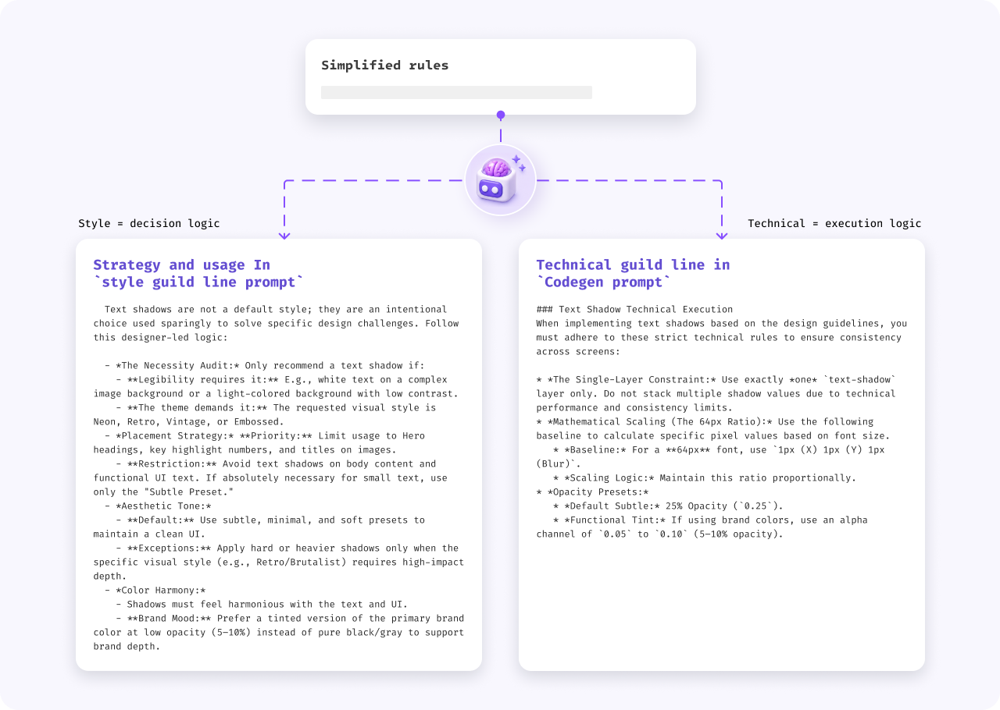
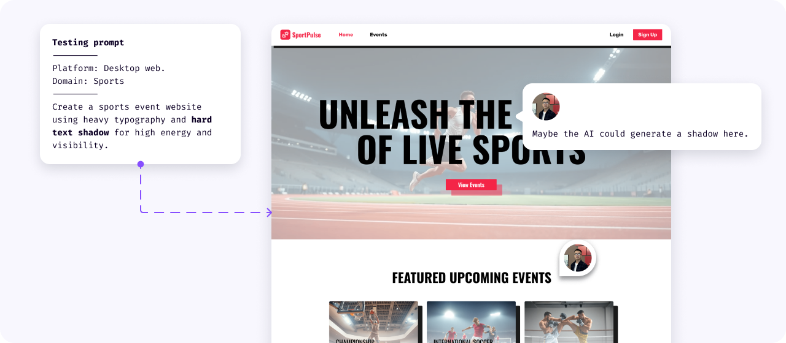
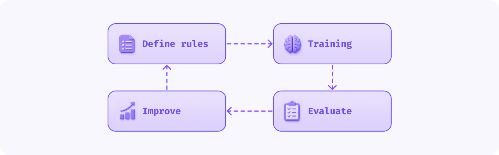

AI Behavior System
Fix inconsistent AI output. Add rules and test scenarios so AI makes reliable decisions.
01
Problem
AI could generate text shadow, but could not use it reliably
AI output was inconsistent. In some cases, text shadow was missing even when the prompt asked for it. In other cases, the shadow appeared with weak intensity, incorrect values, or inconsistent behavior across similar screens.
The issue was not only visual quality. AI did not have clear decision logic for when, where, and how to use text shadow.
Unstable behavior
- Shadow missing when needed
- Weak or incorrect values
- Different behavior across similar screens
Validation difficulty
- Non-deterministic output
- Recurring issue patterns
- Need for scenario-based testing
Product risk
- Lower trust in AI output
- Harder handoff to product values
- More manual correction required

02
Product Goal
Make AI-generated text shadow predictable, consistent, and product-ready
The expected result was not perfect automation. The goal was to improve reliability and make AI behavior easier to understand, test, and refine.
AI should not only generate an output. It should follow product logic that can be tested, improved, and connected to user control.
1. Apply with intent
- Apply text shadow only when it supports readability or clear visual emphasis
- Avoid using text shadow as default decoration
2. Reduce inconsistency
- Make similar UI contexts produce more similar behavior
- Guide AI toward predefined presets instead of arbitrary free-form values
3. Support validation
- Create a repeatable process for reviewing AI behavior
- Use validation results to refine rules and prompts
03
Rule-Based Solution
A rule-based system for when, where, and how AI should use text shadow
Designers can judge readability, contrast, and visual emphasis by looking at the UI. AI needs these decisions to be expressed as clear rules, conditions, and constraints.
Instead of allowing arbitrary shadow values, the system guided AI through predefined design rules and preset logic.
Apply shadow when
- Text appears on image backgrounds
- Text has low contrast with the background
- Headings need stronger visual separation
- A hero section needs better readability
Avoid shadow when
- Small text
- Dense UI
- Labels and navigation items
- Helper text, error messages, and functional UI text
Use preset logic
- Minimal: subtle readability support
- Soft: gentle visual separation
- Hard: stronger contrast and emphasis
- Glow: decorative or expressive effect

04
Prompt Integration
Splitting guidance into style logic and technical execution
After the behavior rules were defined, they were translated into structured prompt logic in collaboration with AI engineers.
The split made AI behavior easier to manage because one layer explained design intent while the other controlled execution.
Style guideline
- Readability
- Visual hierarchy
- Background complexity
- Text importance
Technical guideline
- Preset mapping
- Supported shadow values
- Product constraints
- Canvas compatibility

05
Scenario-Based Validation
Testing behavior patterns, not one successful output
AI behavior was validated across different prompt conditions and UI contexts. The goal was to evaluate patterns across repeated outputs, not only check one result.
Evaluation process
- Prompts without text shadow instructions
- Generic text shadow requests
- Specific presets such as Soft, Hard, and Glow
- Hero banners with image backgrounds
- Dense UI screens where text shadow should be avoided
Evaluation criteria
- Applied when needed
- Avoided when it reduced clarity
- Correct preset selected
- Visible enough to support readability
- Mapped to product values

06
Results and Learnings
AI-generated text shadow became easier to evaluate, refine, and connect to the product
The rule-based system improved the consistency of AI-generated text shadow behavior. Output became easier to evaluate, easier to refine, and easier to connect with the product canvas.
AI could generate text shadow, but it did not know how to use it reliably. This work translated design judgment into structured rules, prompt logic, and repeated validation so AI behavior became more predictable and product-ready.
Results
- ~70% directional system reliability
- Reduced missing, weak, or incorrect shadow behavior
- Clearer validation and prioritization
Learnings
- AI needs product rules
- Design logic must be simplified
- Validation must be scenario-based
- Product constraints matter
